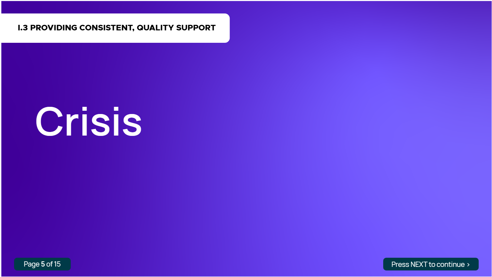
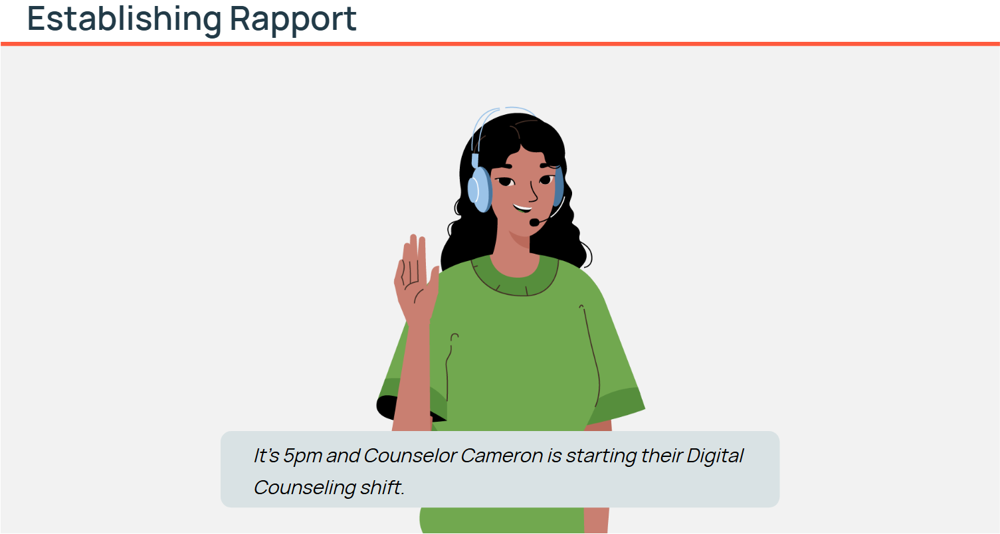
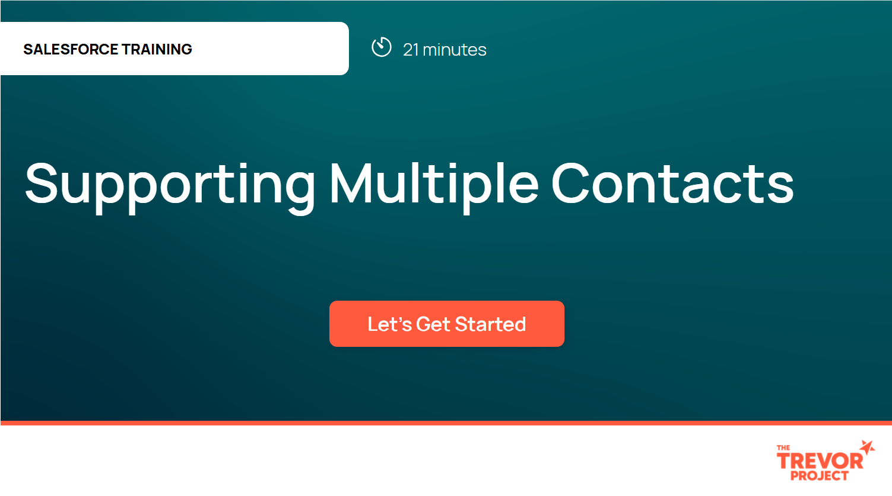

Connect with me:



This module was part of the Lifeline Training Refresh project that injected interactives, notetaking capabilities, knowledge checks, and other learning assets to modernize the existing training content.
This end-of-course module consisted of two parts: an animated video of a conversation between a member of the Crisis Support Team and a youth in-crisis that was based on content shared by SME-stakeholders and real cases; and a simulated conversation in which the learner must apply the concepts they had learned throughout the course. The animation was created using the Storyline timeline and triggers and short animated clips produced by a graphic arts team. The simulation was created in Branchtrack and assessed the trainee's application of the course material. This was the last lesson before the Course II Final Assessment as part of the Trevor Project's Digital Training Refresh project.


This module was part of the course following the Crisis Support Team's Digital Training Library (DTL), an entry-level training program over a newly implemented Salesforce-Twilio chat integration developed to replace the old chat system at The Trevor Project. The DTL program served as the introduction of the Salesforce-Twilio Flex chat integration and a tutorial for Digital Crisis trainees and volunteers while this module trained support specialists who opted into serving multiple contacts after successfully completing the DTL training program using the Salesforce-Twilio multichat functions. The module provides an interactive Storyline tutorial with demo videos made in Camtasia on how to adeptly use multichat in effectively supporting in-crisis LGBTQ+ youths.
Launch ModuleConnect with me: